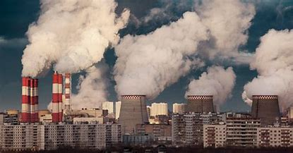
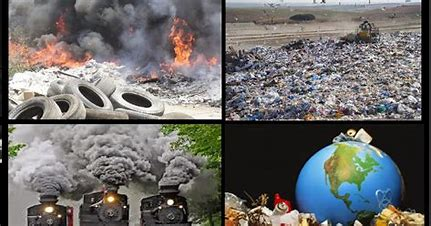
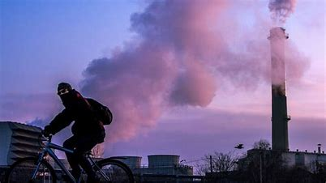

Una de las causas más grandes del calentamiento global es la contaminación, y los problemas que conlleva ésta. Los malos hábitos de las personas han hecho que este tema sea haya vuelto muy delicado para el planeta. La mejor solución sería que educaramos a las paersonas desde pequeñas para tener buenos hábitos y que esto no sea un problema de gran importancia.
 Solucion Juan Pablo Melgoza: Para reducir los contaminantes y productos, una cosa muy buena es reciclar. Por ejemplo: reciclar tapas de bottellas de plástico o de cartones de leche, también botellas de plástico, cartón y vidrio. Otra manera de reducir la contaminación es separar la basura por los diferentes tipos, como orgánica e inorgánica para la facilitación del deshecho de cada una de éstas.
Solución Daniel Galán: Otra solución para reducir la contaminación es disminuir el uso de transportes, como coches, camiones, o vehículos que contaminen. Esto lo conseguiremos con utilizando más tipos de transportes, como bicicletas u otros que no contaminen. También promover el uso de vehículos eléctricos usando energías renovables y evitando la quema de la gasolina.
Ver página de Daniel Galán Ver página de Juan Pablo Melgoza